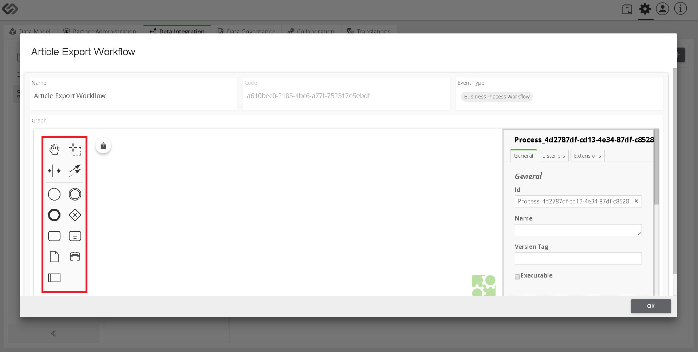

Configure Article Export Workflow¶
Configure Article Export Workflow is a Partner Engagement Platform feature that allows a user to create a workflow for exporting of data.
| Key Term: |
|
| Description: |
|
| Related topics: | |
| Application: |
|
How-to: Configure Article Export Workflow¶
To do this, follow these steps:
- Log in and then, click on the Administration button.
- Click the Data Integration tab and click on the Workflow section.
- To create a workflow, click on the “+” icon on the right side of the window.
- Fill out the details (Name, Event Type, and Code). For the Event Type, select the Endpoints/Others Workflow option. Click on the Create button.
- Select the created workflow and you will be directed to a pop-up window, where you can define the workflow of the Article Export Process.
Note: The Graph section in the pop-up window contains BPMN 2.0 modelling notation. This will allow users to model article export process using universally known and standard BPMN 2.0 notations.
- Drag and drop the notations in the Workflow Modeler to define the workflow of the article export. The workflow starts with Process Start and acts as a process trigger. So, the first element in the workflow will be the Process Start.
- Select the wrench icon of the Start Event notation and a drop-down list will pop up containing the list of types of events.
- Select the option, Process Start from the list to change the type from Start Event to Process Start.
- Now, click on the Append Task icon.
- Check that the task has been added in the workflow.
- Select the wrench icon of the task notation and a pop-up window will appear containing the list of task types.
- Select the option, Article Export from the list.
- Select the notation to end the process.
- Check that the Process End element has been added in the flow.
- Click on the wrench icon and a pop-up window will appear and there you can select the option, Process End.
- Select the article export notation from the defined flow and fill out the necessary details on the right side vertical panel.
Fill out the following details:¶
- Sheet Name
An Excel file may contain different sheets in it. Here, we need to mention the sheet name which will contain the articles.
- Primary Key Column
All the defined products/articles in a file have unique identification or ID. Here, in the Primary Key Column, we need to define the column name of the sheet which will contain the unique IDs of the products.
- Type
Here, we need to select one from the mentioned options below:
Single Class: Select this option, if all the products/articles that you want to export, use the same class in the system. For example, if all the products are Individual Article or all the products are PID.Column Class: Select this option, if all the products that you want to export, use different types of classes in the system. For example, there are two products in a sheet; one is Individual Article and the other one is PID.
- Class ID/Class Column
The value of this field is based on the selection of Type field:
Class ID: When all the products that you want to export use the same class of the system, we select Single Class option from the Type field. In this case, we need to select the system-generated class from the list as Class ID.Class Column: When defined products that you want to export use different classes of the system, we select Column Class option from Type field. In this case, we need to enter the column name, which will contain the IDs of all the classes in a Class Column field.
- Multiclassification
Select this option, if products use Non-nature classes.
- Type
As soon as you select the Multiclassification option, this option will be visible and available. Here, we need to select one from these options:
Multiple Class: Select this option, if exported products use multiple system-generated non-nature classes.Column Class: Select this option, if exported products use multiple non-nature classes which are yet to be created.
- Taxonomies
Here, we need to enter the column name of the sheet which will contain the taxonomy details.

Last updated: Jul 24, 2018